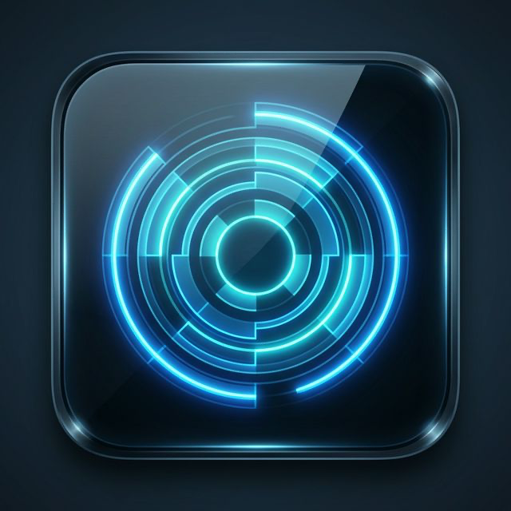
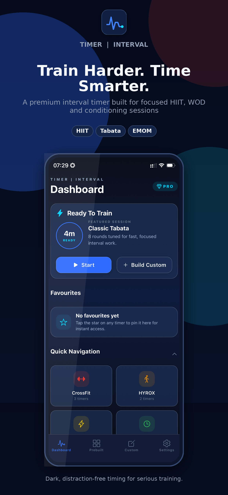
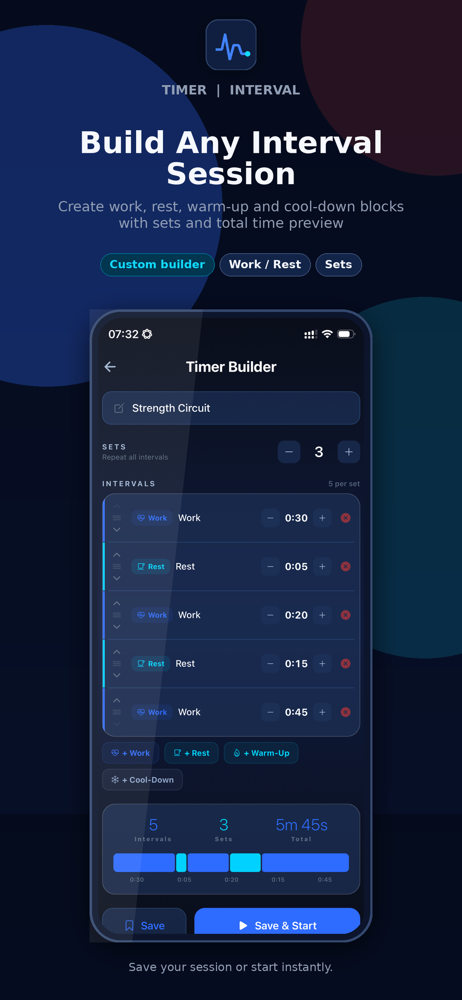
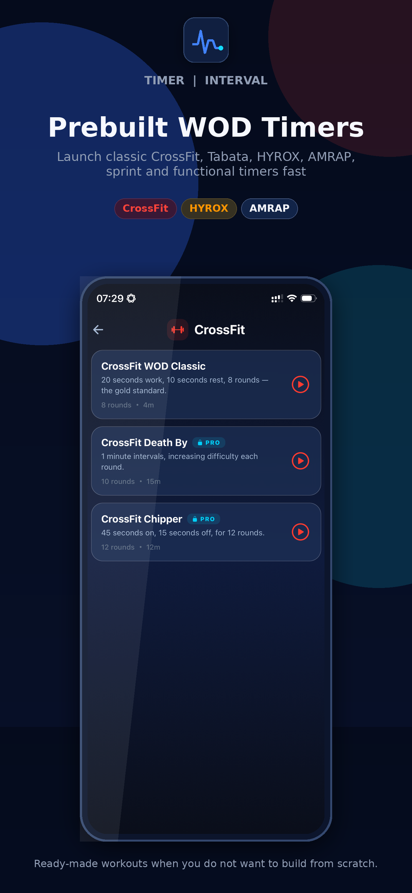
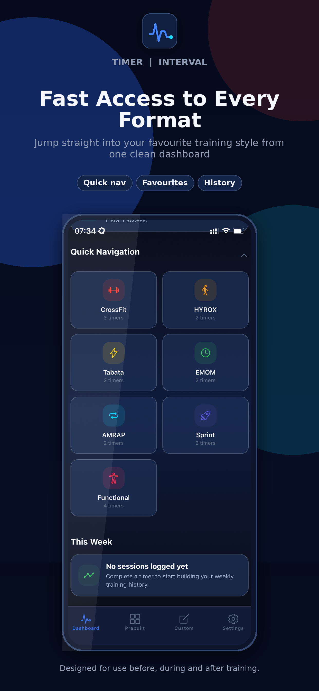
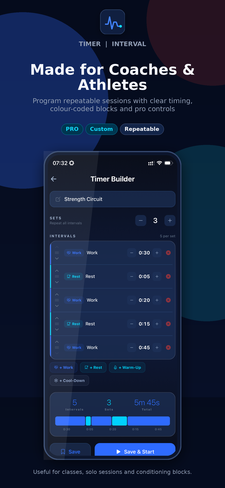
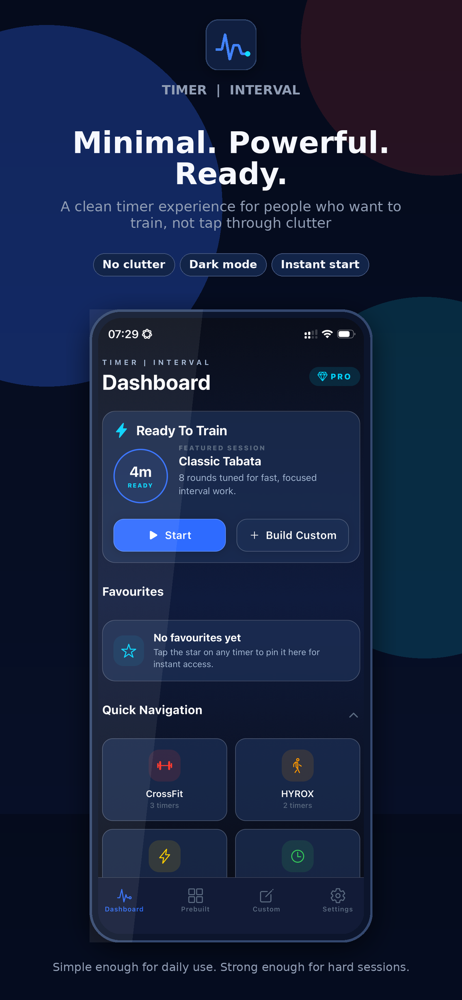

HIIT timer
Classic high-intensity interval training: short bursts of work, short recovery, repeat. Build any work/rest ratio.

Timer | IntervalHIIT · Tabata · EMOM · AMRAP · HYROX
A clean, focused interval timer for HIIT, Tabata, EMOM, AMRAP, HYROX, CrossFit and running intervals. Build any workout, save your favourites, and train with clear audio cues and haptics.
One-time purchase. No subscription. No ads.

Built for athletes and coaches who want a timer that just gets out of the way and keeps them moving.

Drop in work, rest, warm-up and cool-down blocks. Stack them into sets. Save it. Reuse it next week. The builder handles the simple stuff fast — and the complex stuff without making you fight it.

Classic Tabata, EMOM 10, EMOM 20, AMRAP 12, AMRAP 20, 30/30 sprints, HYROX station prep, CrossFit WOD Classic and more — ready to go the moment you open the app.

Your dashboard puts your favourite timers and the categories you train most at the top. Open the app, tap once, train.

Full-screen, high-contrast countdown. Clear audio cues. Haptic feedback on every transition. Designed to be readable from across the gym and reliable on the rig.

Dark, distraction-free interface. Big animated countdown. No banners, no ads, no upsell pop-ups mid-workout. Just the timer.
Whatever you train, Timer | Interval has the protocol built in or makes it two taps to build.
Classic high-intensity interval training: short bursts of work, short recovery, repeat. Build any work/rest ratio.
20 seconds on, 10 seconds off, 8 rounds. The Tabata protocol is included, plus a Double Tabata variant.
Every minute on the minute. 10-minute and 20-minute presets included, or build your own length.
As many rounds as possible. 12-minute and 20-minute AMRAPs are ready to go.
Race-station prep: 4 minutes work, 1 minute transition. Plus high-intensity conditioning blocks.
WOD Classic, Death By and Chipper presets, or build your own work/rest scheme to spec.
30/30 sprints, 10/50 power sprints, and anything in between for track and treadmill work.
Unilateral and bilateral functional circuits with built-in transitions and rotations.
Timer | Interval auto-detects your iPhone's language and ships with full localization in:
Yes. The core interval timer, the most popular HIIT, Tabata, EMOM, AMRAP and CrossFit presets, and one saved custom timer are free. A one-time Lifetime Pro purchase unlocks unlimited custom timers, premium workout presets and premium themes — no subscription.
Yes. The full-screen timer, builder and dashboard all scale to iPad, including landscape orientation for side-on coaching setups.
HIIT, Tabata, EMOM, AMRAP, sprint intervals, HYROX, CrossFit WODs, circuit training, and any custom work/rest/warm-up/cool-down flow you build yourself.
No. Pro is a one-time purchase. Pay once, keep every Pro feature forever — no recurring charges.
English, Spanish, German, French, Italian, Portuguese, Japanese, Dutch, Simplified Chinese and Korean. The app picks up your iPhone's language automatically or you can override it in Settings.
Yes. Alerts and audio cues continue when your screen locks or you switch apps so you can run music alongside.
Timer | Interval is available now on the App Store for iPhone and iPad.